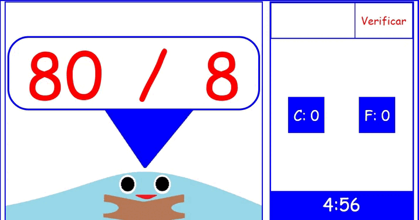
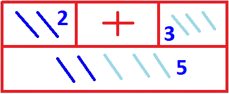
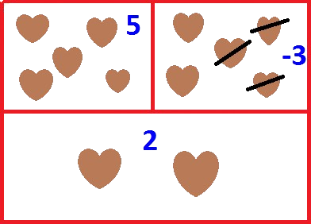
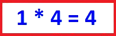
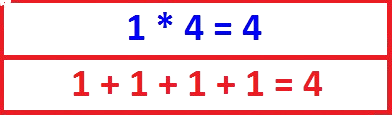

Ahora que ya tienes conocimiento sobre los operadores, que tal si hacemos unos ejercicios, yo te digo y tu respondes es asi de simplie
si tienes problemas con los operadores, no te preocupes tengo el conocimiento aqui en mi libro
CONSEJOS
¿recuerdas las tablas que te di?

La suma o adición es una operación matemática fundamental, que consiste en la incorporación de nuevos elementos a un conjunto numérico, esto es, a la fusión de dos números para obtener uno nuevo, que exprese el valor total de los dos anteriores.
A los niños podemos explicarles que sumar es juntar 2 o más cosas para saber cuántas hay en total, pueden sumar con los dedos en una mano ponemos 2 palos y en la otra 3 palos, sumamos todos los dedos que tenemos: 2 palos + 3 palos, es igual a 5 palos.

La resta o sustracción es una de las cuatro operaciones básicas de la aritmética y consiste en quitar una cantidad a otra, sustraer un determinado número de elementos a un conjunto.
si tienes 5 corazones de chocolate y tu amigo se comió 3 corazones, mediante la resta podemos averiguar la cantidad de corazones de chocolate restantes: 5 - 3 = 2

Las multiplicaciones son operaciones matemáticas que se realizan para calcular el resultado de sumar un número tantas veces como indique el otro número que compone la operación, por ejemplo:

Esta operación la podemos expresar como:

La división es una de las operaciones básicas de la aritmética y consiste en separar en partes iguales un total. Es decir, si tenemos una cantidad y queremos dividirla en partes iguales, podemos utilizar la división para determinar cuántas partes iguales obtenemos y qué cantidad corresponde a cada parte.
La división es la operación contraria a la multiplicación. Por lo tanto, para saber si una división es correcta, se puede multiplicar el resultado, también llamado cociente, por el divisor. Por ejemplo:
10 ÷ 5 = 2, por lo tanto, 2 x 5 = 10, la división es correcta.